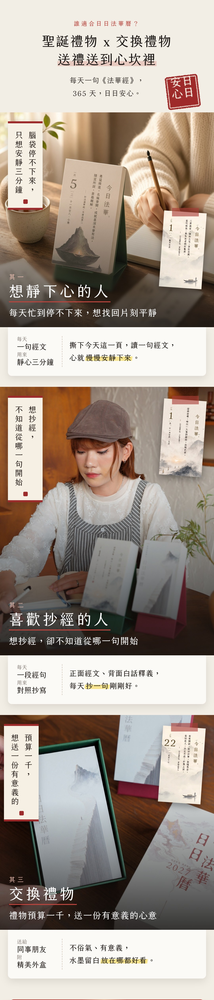
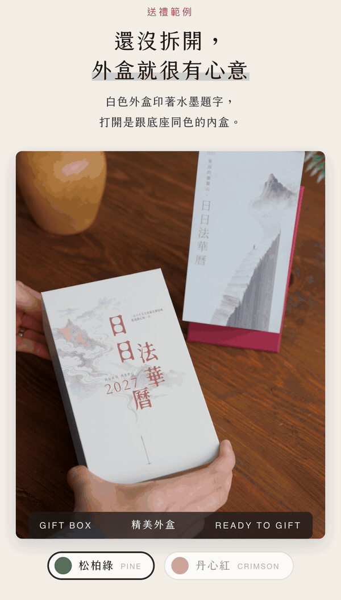
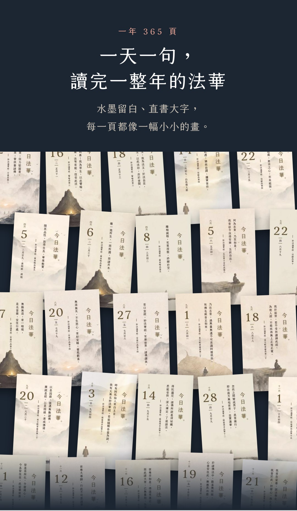
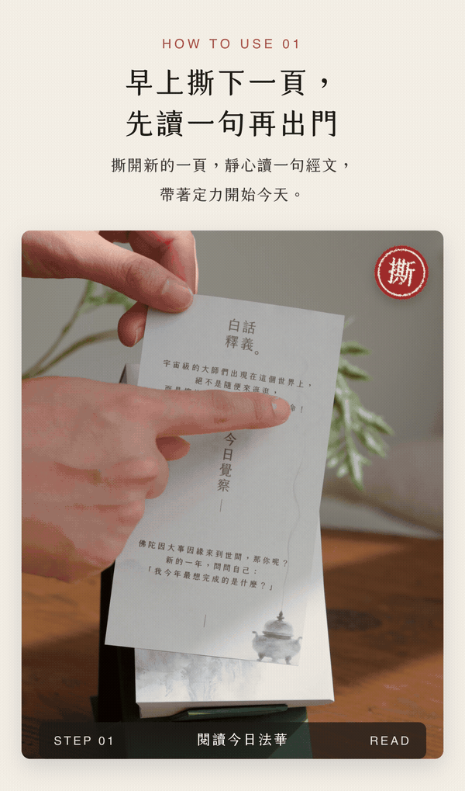
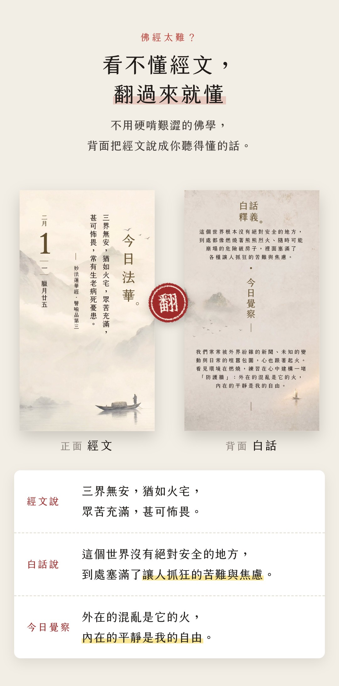
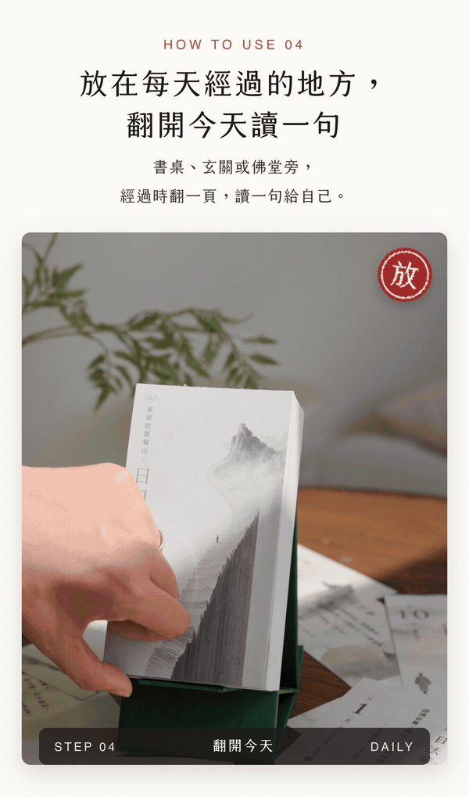
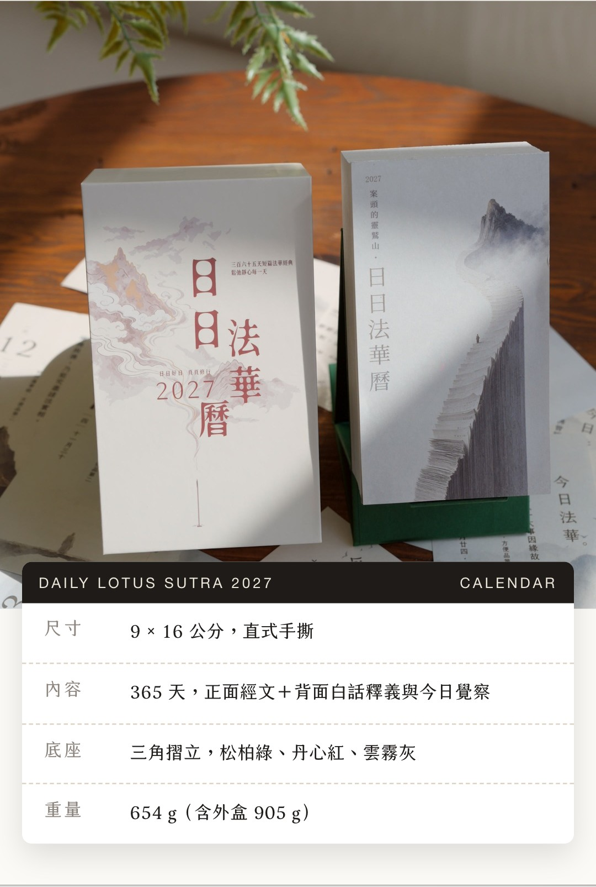

<!doctype html><html lang="zh-Hant"><meta charset="utf-8"><meta name="viewport" content="width=device-width,initial-scale=1"><title>日日法華曆落地頁 v10</title><style>body{margin:0;background:#888}main{max-width:432px;margin:0 auto;background:#fff}img,video{display:block;width:100%}</style><main>














</main>